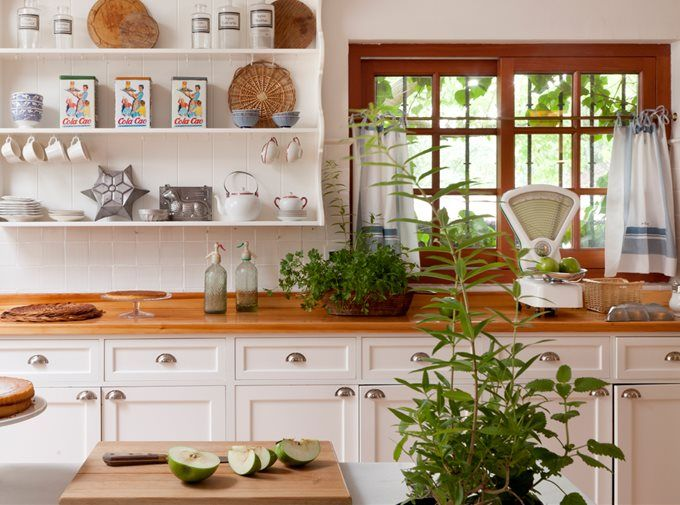

Recetas fáciles

Sencillas de forma súper intuitiva de realizar y rápidas para preparar en casa.
Qué Cocino?
Te mostramos recetas sencillas para hacer en casa con los ingredientes que tenes a mano y te seguimos paso a paso

Te acercamos a la cocina de forma amigable para que descubras tu potencial oculto
Sencillas de forma súper intuitiva de realizar y rápidas para preparar en casa.
Te mostramos el potencial de lo que tus ingredientes te pueden dar